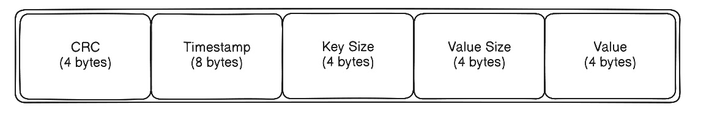
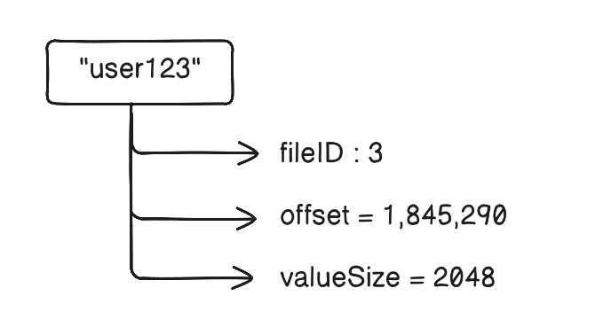
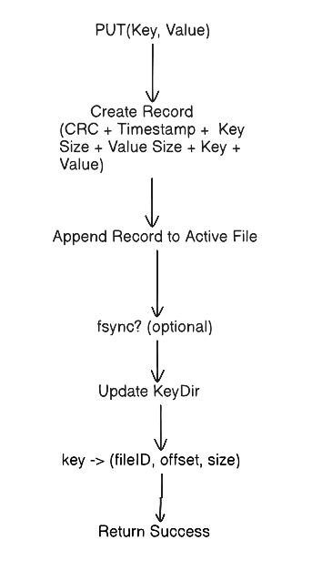

I wanted to understand the storage engines, so I built one: Rack KV
When making an app that requires some level of persistence, I usually just make a DB call. It's so simple and reliable that, most of the time, I don't have to worry about it. But why is the abstraction of a database so reliable? How do storage engines work with such reliability and efficiency? How are hundreds of thousands of operations per second handled by a DB server without losing or mixing things up? How do databases maintain reliability while scaling to global systems? And many more such questions arose in my mind. So, I decided to go a little deeper into the abstraction layer of the persistence layer.
Going Down the Rabbit Hole
So, my curiosity led me to explore further, stumbling across many blogs and research papers. A few of the fundamentals that I found crucial to grasp before diving into this never-ending sea of storage engines were:
- B-Trees
- LSM Trees
- SSTables
- Write-Ahead Logging (WAL)
While exploring, I stumbled across a white paper released by Riak called Bitcask. I found it interesting enough to implement myself.
Before heading into the implementation, I also needed to understand several important concepts:
- Consistency: Data should remain correct and durable under concurrent writes and unexpected crashes.
-
File I/O:
Handling log files, buffered I/O, file descriptors, flushing data to disk,
and
fsync. - Storage Data Structures: Hash maps, B-Trees, LSM Trees, SSTables, and append-only logs.
- Write-Ahead Logging (WAL): Logging writes before flushing them to disk to make data more durable.
- Benchmarking & Profiling: Measuring throughput, latency, memory usage, and identifying bottlenecks.
- Testing Concurrent Systems: Detecting race conditions and validating correctness under load.
Designing RackKV
Let’s first try to understand the problem statement and try solving this using first principles.
The problem statement should be simple, right?
This is just a storage engine; the most basic operations it is expected to do are store the data (PUT) and fetch the data(GET).
The simplest storage engine would be an in-memory hashmap. But an in-memory solution will not survive a system crash or a power failure or a simple restart. Clearly, an in-memory hashmap isn’t enough.
How about we maintain a file on disk, which gets appended after each write?
This would make data durable. We should add other metadata along with this, like a timestamp and checksum. Checksum would help us check the integrity of the data (Assume a case when the system crashes in between the disk write; checksum will help us filter out these cases).

Okay...The data is written in a file on the disk; to GET this data, the engine would have to go through each entry of every data file. This would make our reads very expensive.
How about we also maintain an in-memory hashmap along with the append-only logs on the disk, which will get the key-value pair entry after the entry has been written to the disk.
This would make the read just an in-memory lookup. Making read an O(1) operation.
But here is the thing: imagine you have:
- 100 million keys
- Average value size = 2 KB,
Keeping all values in RAM would require about 200 GB of memory.
Instead, we can store the offset of the value in the file.

That’s only a few dozen bytes, while the values stay on the disk.
When there are hundreds of thousands of write operations per second, writing each entry to disk at a time would be a bottleneck, as the disk writes are expensive. So to improve throughput, we can first buffer incoming writes in memory and then flush them to disk in batches.
But what happens if the system crashes while a batch is still being formed, before it has been flushed to disk? In this case, the data will get lost, but this is just a tradeoff between very rare data losses vs significantly faster writes.
So, the PUT Pipeline would be assembled to this.

To GET the data, now the engine would just look up the key-dir(in-memory hashmap); if the key is not there, then it will simply return NIL. Otherwise, it would get the fileID and the offset, read from the data file identified by the file ID, verify the CRC for integrity, and finally return the value.
To delete a key, we simply add an entry containing the key and a tombstone, marking that key as deleted.
So far, so good, but we still need to make this system fault-tolerant and recoverable. After a restart, the engine could scan the data files and rebuild the KeyDir, but iterating over all the entries would be inefficient because there could be a lot of redundant records. To optimize this recovery process, we use Hint Files (more on that ahead).
Hint Files
These are lightweight metadata files, used to rebuild the in-memory index (KeyDir) during recovery. They are generated during the compaction process and contain only the metadata required to reconstruct the KeyDir, eliminating the need to scan the entire data files.
Compaction
Compaction is the garbage collection process. Over time, we would have large data files with many redundant keys. Since RackKV never updates records in place, old versions and deleted keys accumulate over time. So, compaction cleans this up by creating new files that contain only the latest live values.
Where does it get the latest values? Remember, the KeyDir already has the location of the latest values. It just has to iterate over the data files, use the KeyDir as a reference, and write the live values to the merged file. After writing to the merged file, we have to update the value's offset in the KeyDir. Once we have iterated over all the files, we can simply flush the merged data.
We then atomically swap the files, delete the old ones, and rename the merged file (e.g., merge.data → 000001.data).
This helps us reclaim disk space, reduce stale entries, and improve read performance.
File Roll-over
Instead of using a single large file, the files are rolled over if the current file exceeds a certain threshold size. This keeps files manageable, makes recovery faster, and simplifies operations like compaction by working with smaller immutable files.
Concurrency
Now, Let’s talk about concurrency. One of the most interesting design choices in Bitcask is how it handles concurrency. Instead of allowing multiple writers simultaneously, the write path is serialized through a single writer. This sacrifices write parallelism but greatly simplifies correctness.
Since the writes are appended sequentially to the active data file, there is no need to handle multiple writers updating the file at the same time.
To ensure one writer, I used a lock file, which acquires the lock if there is no existing writer, and forbids the formation of other writers.
However, reads can happen concurrently, since the KeyDir is in-memory and the data files are immutable once rolled over; multiple readers can safely fetch data.
Afterword
Building RackKV taught me that databases are less about clever algorithms and more about carefully balancing trade-offs. Every design choice- append-only logs, in-memory indexes, batching writes, tombstones, or compaction— optimizes one aspect while sacrificing another. It gave me a much deeper appreciation for the engineering behind systems we use every day without thinking.
This was a very high-level overview of the implementation. To dive deeper into how everything works, I recommend exploring the source code in the repository or reading the original Bitcask paper.